📷 Photothèque
Rassembler, retrouver, classer, embellir et transmettre toutes vos photos, sans jamais toucher à vos originaux.
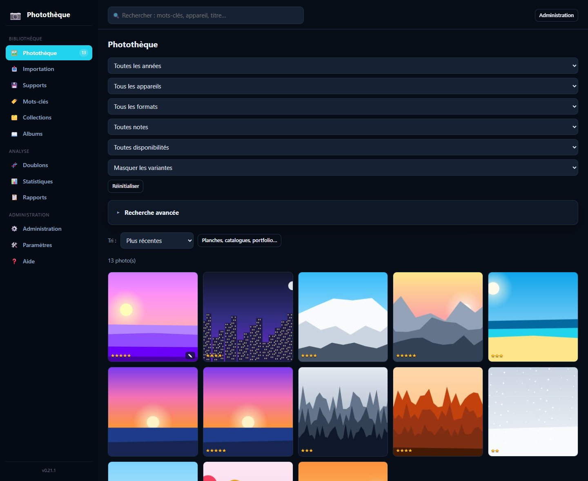
Table des matières
1Les principes
Trois idées simples expliquent tout le fonctionnement de la Photothèque.
Le catalogue n’est pas la photo
La Photothèque tient un catalogue : une fiche par photo, avec sa date, son appareil, ses mots-clés, sa note, ses retouches… et l’adresse du fichier. Les photos elles-mêmes restent là où elles sont, sur votre disque, votre clé USB ou votre disque externe. L’application les lit pour fabriquer des vignettes, mais ne les écrit jamais.
Ni l’indexation, ni l’import, ni l’outil Doublons n’effacent un fichier. « Retirer de l’index » enlève seulement la fiche.
Un disque débranché rend ses photos « indisponibles ». Rebranchez-le : tout revient, même sur une autre lettre de lecteur.
Une retouche est une liste de réglages. L’original reste intact ; on revient en arrière quand on veut.
Le parcours type
2Prise en main
Lancer l’application et se repérer dans la fenêtre.
Démarrer
- Double-cliquez sur Phototheque.bat dans le dossier de l’application. Une petite fenêtre noire s’ouvre : c’est le moteur de la Photothèque. Laissez-la ouverte pendant que vous travaillez.
- Votre navigateur s’ouvre tout seul sur l’adresse http://localhost:3212. Si ce n’est pas le cas, tapez cette adresse vous-même.
- Pour quitter, fermez l’onglet puis la fenêtre noire.
L’écran principal
| Menu | À quoi ça sert |
|---|---|
| 🖼️ Photothèque | Voir, chercher, sélectionner et traiter vos photos. |
| 📥 Importation | Ajouter des dossiers de photos au catalogue, ou copier des photos dans votre bibliothèque. |
| 💾 Supports | Déclarer vos disques, clés et cartes, savoir lesquels sont branchés. |
| 🏷️ Mots-clés · 🗂️ Collections | Organiser : vocabulaire de classement, sélections et recherches enregistrées. |
| 📖 Albums | Mettre en page des albums photo, les vérifier et les exporter en PDF. |
| 🧬 Doublons · 📊 Statistiques · 📋 Rapports | Analyser votre fonds : copies, répartition, contrôles. |
| ⚙️ Administration · 🛠️ Paramètres | Sauvegardes, base de données, réglages de l’indexation. |
| ❓ Aide | Ce guide. |
3Importer et indexer
Faire entrer vos photos dans le catalogue — avec ou sans copie.
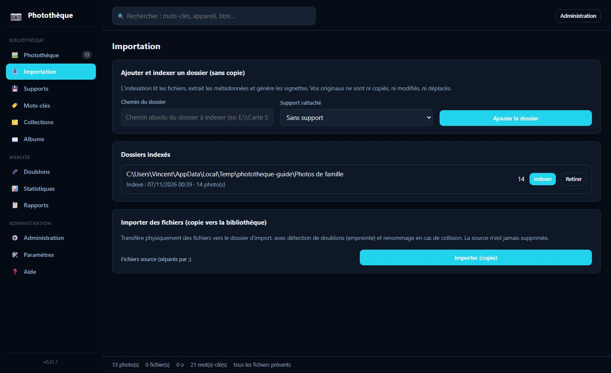
Indexer un dossier (sans copie)
C’est la méthode recommandée pour des photos déjà rangées sur un disque.
- Saisissez le chemin du dossier, par exemple D:\Photos.
- Choisissez le support qui le contient (voir chapitre 4).
- Cliquez Ajouter le dossier, puis Indexer.
La Photothèque parcourt les sous-dossiers, lit les métadonnées (date, appareil, GPS…), calcule l’empreinte de chaque fichier et crée les vignettes. Relancez Indexer après avoir ajouté des photos : seules les nouveautés sont traitées.
Importer (avec copie)
Pour vider une carte mémoire ou un téléphone : les fichiers sont copiés dans votre dossier de bibliothèque (réglable dans Paramètres), classés par année si vous le souhaitez.
- Les photos déjà présentes (même empreinte) sont repérées et ne sont pas copiées deux fois.
- En cas de nom identique, un nom unique est créé : rien n’est écrasé.
- La source n’est jamais vidée : effacez la carte vous-même, une fois rassuré.
4Les supports
Disques, clés, cartes : savoir où se trouve chaque photo, même quand le disque est rangé dans un tiroir.
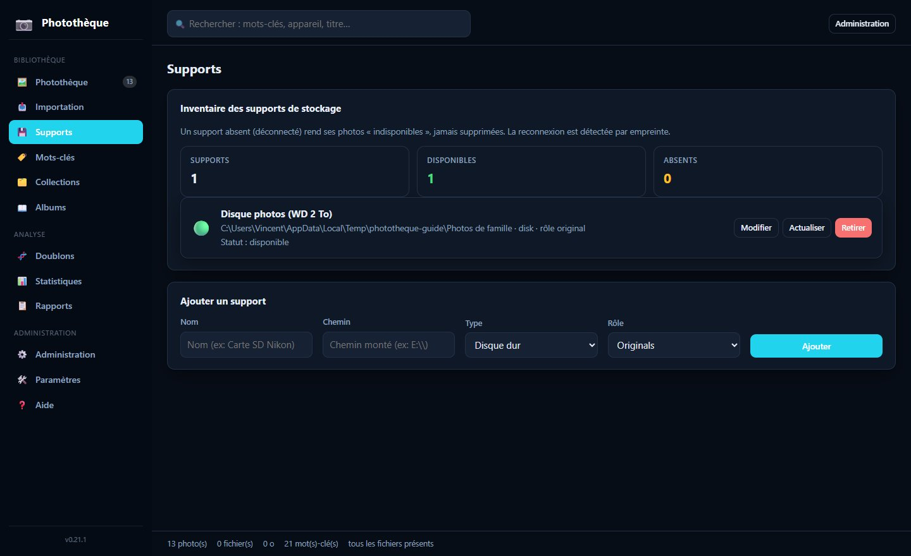
Un support est un disque (ou une clé, une carte, un NAS…) que vous déclarez une fois : nom, type, rôle (originaux, sauvegarde, archive…), marque, numéro de série et emplacement physique (« bureau, étagère du haut »). La Photothèque lui attribue une empreinte pour le reconnaître.
- Actualiser vérifie quels supports sont branchés.
- Les vignettes et les fiches d’un support débranché restent consultables : vous savez quel disque aller chercher.
- Retirer supprime la déclaration du support, jamais ses fichiers.
5Parcourir et rechercher
La grille, la visionneuse, les filtres et la recherche avancée.
La visionneuse
Cliquez sur une vignette pour l’afficher en grand. Les flèches ← → passent d’une photo à l’autre, Échap referme. Si la photo a une version retouchée, c’est elle qui s’affiche ; Voir l’original permet de comparer.
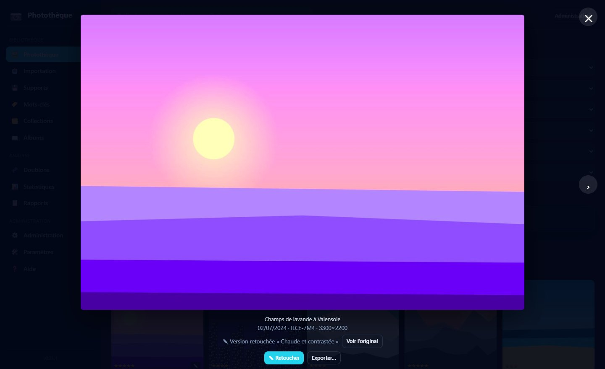
Rechercher
- Recherche rapide (en haut) : tapez un mot — titre, mot-clé, appareil, lieu… Les accents et majuscules n’ont pas d’importance : « ete » trouve « Été ».
- Filtres : année, appareil, format, note minimale, disponibilité, variantes. Réinitialiser efface tout.
- Recherche avancée : combinez mots-clés (tous / au moins un / aucun, catégorie), période de prise de vue, objectif, auteur, lieu (ville, région, pays lus dans les fichiers), état de sauvegarde, orientation, dimensions, présence de légende ou de GPS, doublons…
- État de sauvegarde : une photo est « couverte » si l’un de ses fichiers se trouve sur un support dont le rôle est Sauvegarde ou Archive (écran Supports). « Un seul exemplaire disponible » repère les photos qui n’existent qu’à un seul endroit.
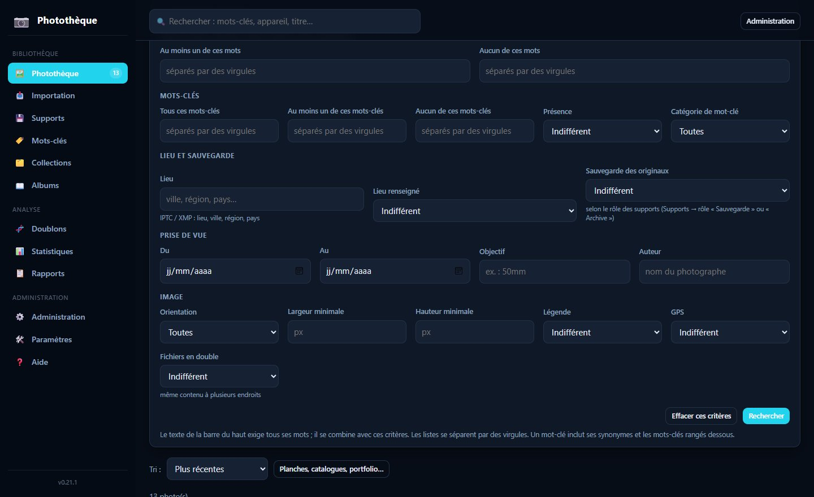
Sélectionner pour agir en lot
Cochez la petite case en haut à gauche des vignettes. Une barre d’actions apparaît : noter, ajouter un mot-clé, ajouter à une collection ou à un album, exporter, retirer de l’index.
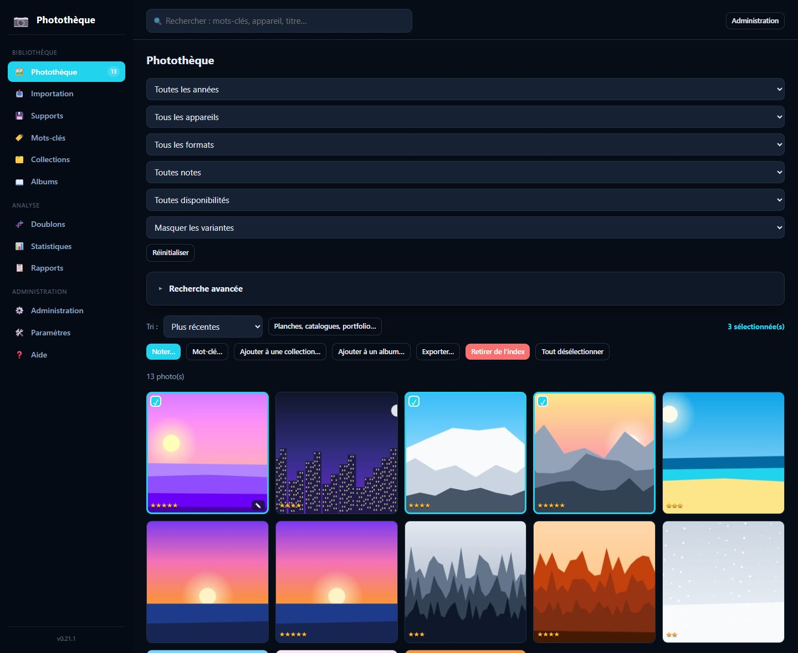
6Classer : notes, mots-clés, collections
Un peu de rangement aujourd’hui, beaucoup de temps gagné demain.
De 1 à 5 étoiles. Filtrez ensuite « note ≥ 4 » pour ne garder que le meilleur.
Lieux, personnes, thèmes, événements. Une photo peut en avoir autant que nécessaire.
Des regroupements libres, sans déplacer aucun fichier.
Les mots-clés
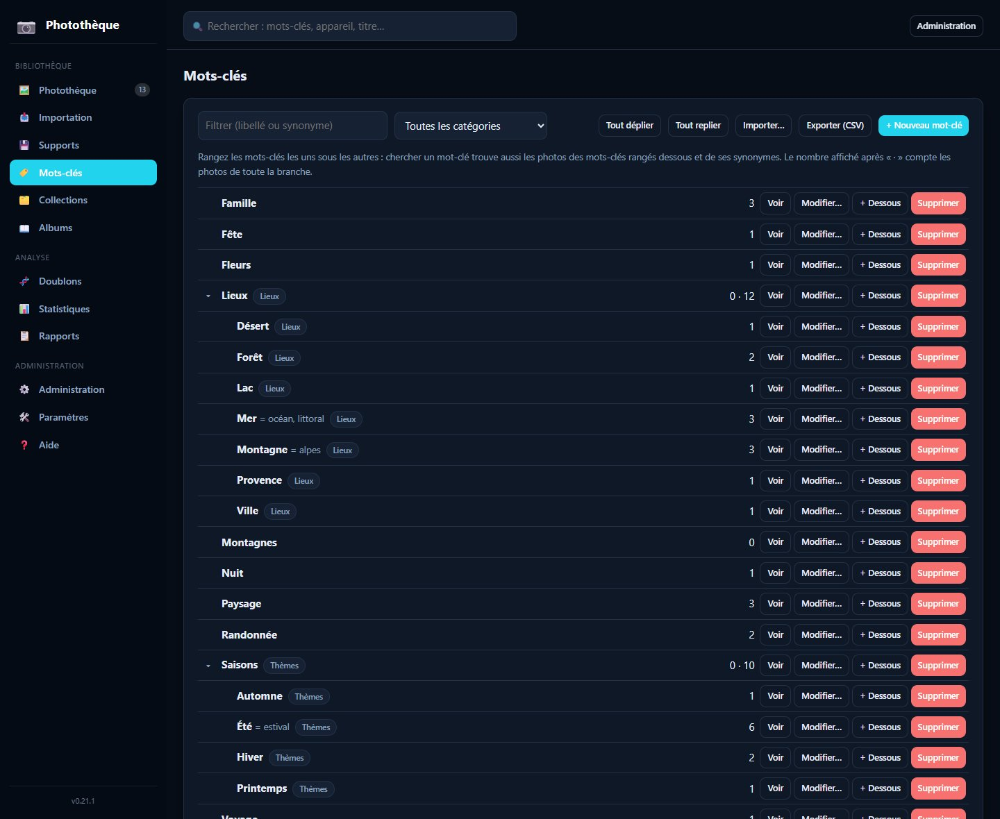
Rangez les mots-clés les uns sous les autres (+ Dessous, ou Modifier… → « Rangé sous ») : « Lieux › Montagne », « Saisons › Été ». Voir affiche les photos du mot-clé et de ceux qui sont rangés dessous : « Saisons » trouve les photos d’été comme d’hiver.
- Synonymes : « océan » pour « Mer ». Chercher un synonyme trouve les photos du mot-clé.
- Catégorie et description : pour s’y retrouver dans un grand vocabulaire ; la liste se filtre par catégorie.
- Doublons de vocabulaire : « Montagne » et « Montagnes », « Saint-Étienne » et « saint etienne »… sont signalés. Fusionner… regroupe leurs photos sous le mot-clé choisi ; les autres libellés deviennent ses synonymes. Rien n’est fusionné sans votre accord.
- Statistiques : mots-clés inutilisés, les plus employés, part des photos sans mot-clé.
- Importer… / Exporter (CSV) : le vocabulaire complet (parent, catégorie, synonymes) passe d’une photothèque à l’autre.
Les collections
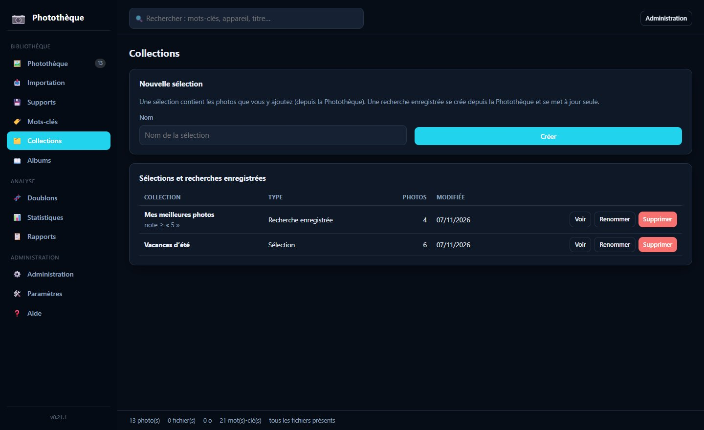
| Type | Contenu | Exemple |
|---|---|---|
| Sélection | Les photos que vous y ajoutez vous-même. | « À imprimer pour mamie » |
| Recherche enregistrée | Toutes les photos qui répondent aux critères, aujourd’hui et demain. | « Note 5 étoiles », « Mot-clé Montagne depuis 2020 » |
7Retoucher sans abîmer
Lumière, couleurs, recadrage, redressement — et l’original reste intact.
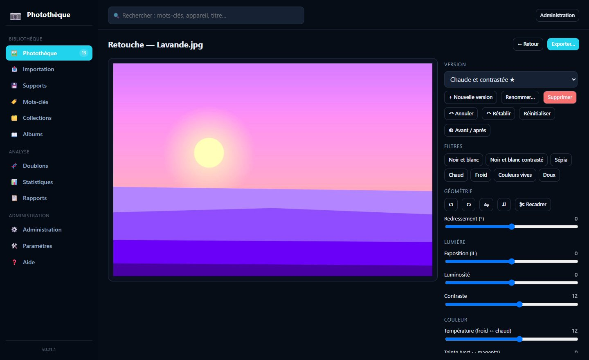
Les outils
- Filtres : noir et blanc, sépia, chaud, froid, couleurs vives, doux.
- Géométrie : rotation, miroir, Recadrer, redressement en degrés.
- Lumière : exposition, luminosité, contraste.
- Couleur : température, teinte, saturation ; Détail : netteté.
- Avant / après, Annuler, Rétablir, Réinitialiser.
Les versions
Une photo peut avoir plusieurs versions : « Noir et blanc pour l’expo », « Recadrée carré »… La version marquée d’une étoile ★ est la version par défaut : c’est elle que montrent la grille, la visionneuse, les albums et les documents.
8Créer un album
De la sélection de photos au PDF prêt pour l’imprimeur.
- Menu Albums : donnez un nom, choisissez le format (carré 30 × 30, A4 paysage…) puis Créer.
- Remplir depuis une collection… ou, dans la Photothèque, sélectionnez des photos puis Ajouter à un album….
- Pour chaque page, choisissez un gabarit : pleine page, 2 côte à côte, 3, 4, 6 photos, page de titre, double page panoramique…
- Glissez-déposez les photos d’un cadre à l’autre ; le bouton ✂ d’un cadre permet de recadrer la photo ; ajoutez une légende.
- Consultez les alertes (résolution trop faible, cadre vide…), puis Aperçu et Exporter en PDF….
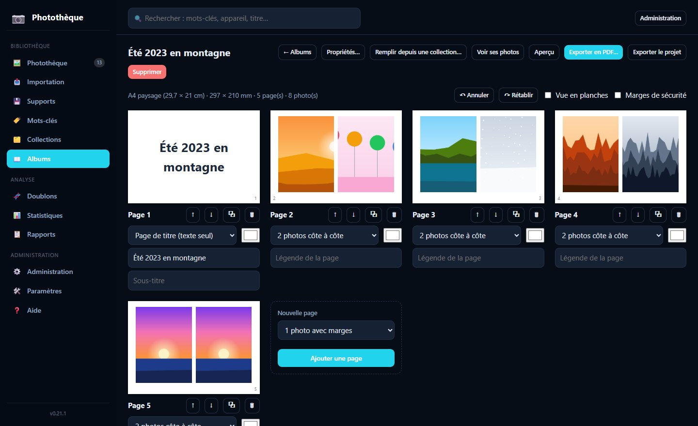
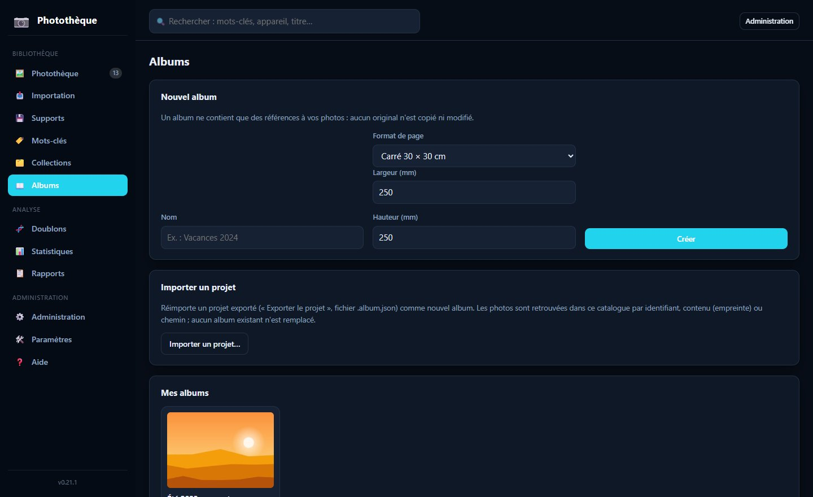
9Doublons et photos similaires
Repérer les copies et les quasi-doublons — et décider vous-même.
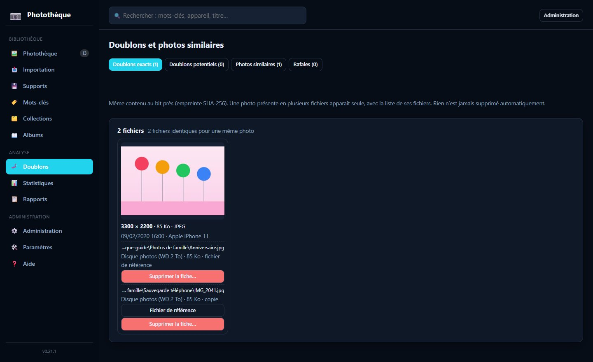
| Onglet | Ce qu’il trouve | Comment |
|---|---|---|
| 🟰 Doublons exacts | Le même fichier présent à plusieurs endroits. | Empreinte SHA-256 identique. |
| 🔍 Potentiels | Des fichiers au contenu différent qui semblent être la même prise de vue (ré-enregistrement, export…). | Même nom et mêmes dimensions, ou même date, appareil et dimensions. |
| 👯 Similaires | Des images qui se ressemblent : recadrage, retouche, autre taille. | Empreinte visuelle (bouton Calculer). |
| 📸 Rafales | Plusieurs photos prises en quelques secondes. | Écart entre les heures de prise de vue. |
Que faire d’un groupe ?
- Choisir la référence : la meilleure photo du groupe ; les autres deviennent ses variantes, masquées dans la Photothèque (filtre « Masquer les variantes »).
- Écarter le groupe s’il ne s’agit pas de vrais doublons : il ne sera plus proposé.
- Supprimer la fiche… d’une copie : la fiche quitte le catalogue et le fichier ne sera plus réindexé. Le fichier reste sur le disque.
10Planches, catalogues, portfolios
Des documents PDF prêts à imprimer ou à envoyer, en quelques clics.
Dans la Photothèque, cliquez sur Planches, catalogues, portfolio…. Le document porte sur la sélection si vous avez coché des photos, sinon sur toutes les photos affichées (avec vos filtres, votre tri, votre collection).
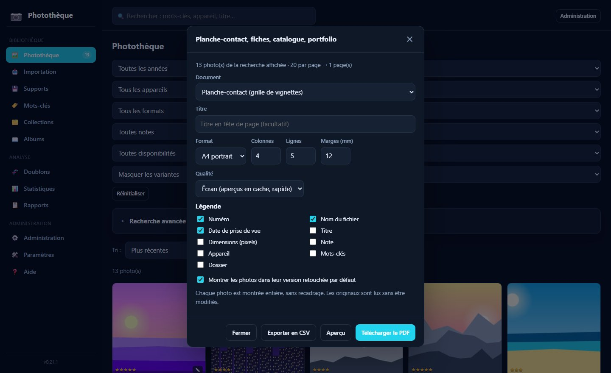
| Document | Pour… | Réglages principaux |
|---|---|---|
| Planche-contact | avoir une vue d’ensemble imprimable, choisir des photos sur papier. | colonnes × lignes, champs de légende (numéro, nom, date, titre, note, appareil, mots-clés…). |
| Fiches détaillées | documenter chaque photo : archives, dépôt, assurance. | une photo par page, avec titre, description, date, lieu, appareil, emplacements, empreinte. |
| Catalogue thématique | présenter un fonds organisé, avec sommaire. | regrouper par année, mois, mot-clé, lieu, dossier, support ou appareil. |
| Portfolio | montrer vos plus belles images. | couverture (titre, sous-titre, auteur), fond blanc, gris ou noir, marges. |
| Export CSV | travailler dans Excel ou LibreOffice. | 34 colonnes, séparateur « ; », accents corrects. |
11Rapports et inventaires
Contrôler l’état de votre fonds, en PDF ou en tableur.
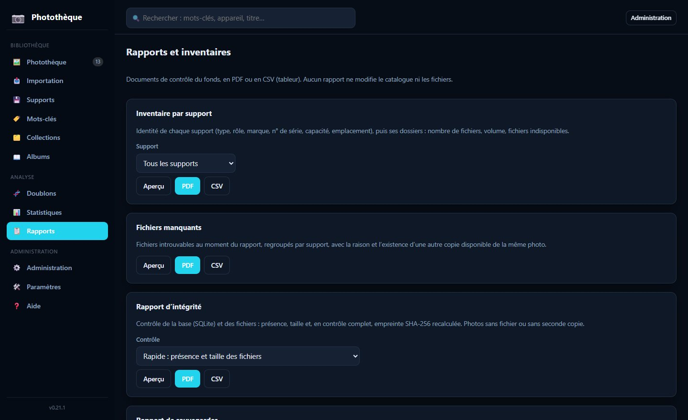
Pour chaque disque : identité, capacité, emplacement, dossiers, nombre de fichiers et volume.
Vérifie la présence réelle de chaque fichier ; indique s’il en existe une autre copie, et quel disque rebrancher.
Contrôle de la base, puis des fichiers : rapide (présence, taille) ou complet (empreinte recalculée, détecte une altération).
Liste et vérification des sauvegardes, programmation, ancienneté de la dernière.
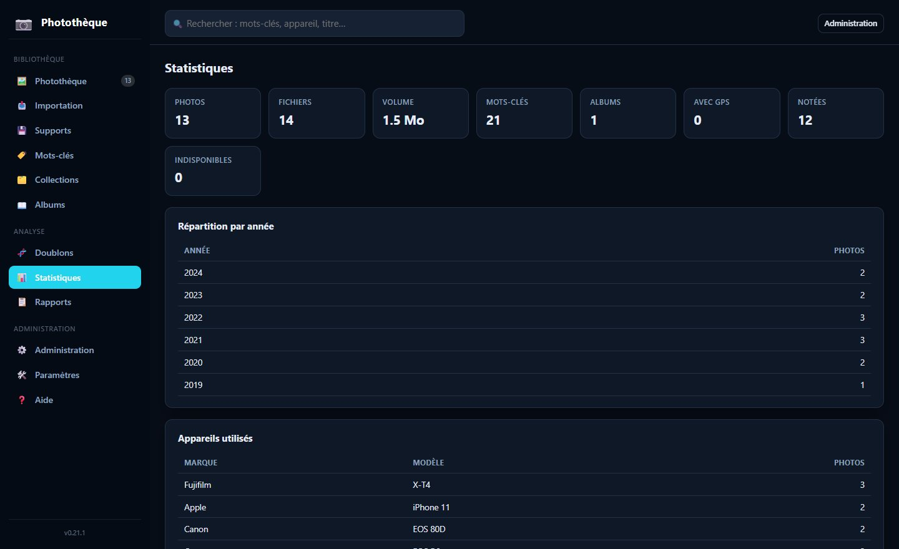
12Sauvegarder et administrer
Votre catalogue représente des heures de classement : protégez-le.
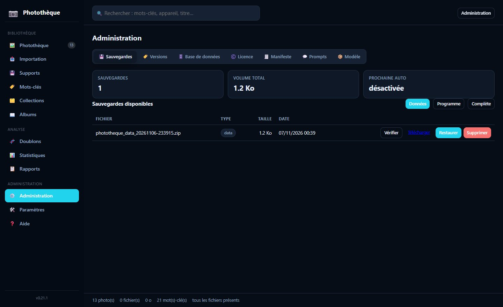
| Type | Contient |
|---|---|
| Données | le catalogue (base), les réglages et vos documents de travail. À faire régulièrement. |
| Programme | l’application elle-même, sans vos données. |
| Complète | les deux, plus les rapports. |
- Sauvegarde automatique : réglez la fréquence, l’heure et le nombre de sauvegardes à conserver.
- Restaurer : une sauvegarde de sécurité de l’état actuel est toujours créée avant.
- Les autres onglets (Versions, Base de données, Licence, Manifeste, Prompts, Modèle) servent surtout à la maintenance.
Paramètres
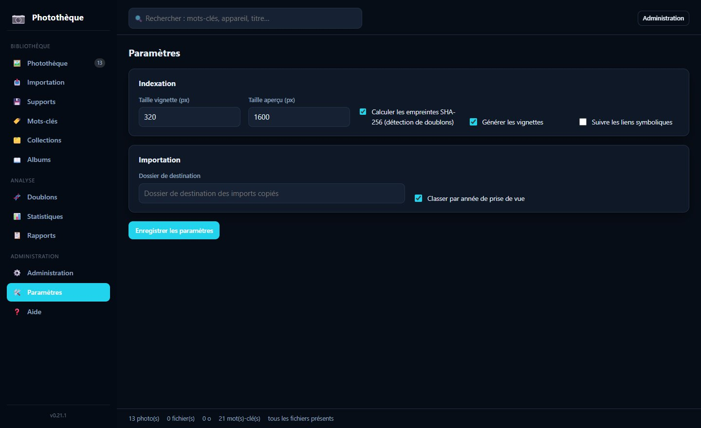
13Questions fréquentes
Les réponses aux situations les plus courantes.
Mes photos apparaissent « indisponibles ».
Le disque qui les contient n’est pas branché, ou a changé de lettre. Branchez-le puis cliquez Actualiser dans Supports. Le rapport Fichiers manquants indique précisément lesquels manquent et où les chercher.
J’ai déplacé un dossier de photos dans l’Explorateur.
Ajoutez le nouveau dossier dans Importation et indexez-le : grâce aux empreintes, les fiches existantes (mots-clés, notes, retouches) sont rattachées aux fichiers retrouvés.
Est-ce que la retouche modifie mon fichier JPEG ?
Non. Seuls les réglages sont enregistrés. Pour obtenir un fichier retouché, utilisez Exporter… : un nouveau fichier est créé dans Exports.
Une photo apparaît en double dans la grille.
Si c’est le même fichier copié ailleurs, il est déjà réuni sous une seule fiche. Si ce sont deux fiches proches (ré-enregistrement, recadrage), ouvrez Doublons et choisissez une référence : l’autre deviendra une variante masquée.
Je ne trouve plus une photo.
Cliquez Réinitialiser sous les filtres, vérifiez le filtre « variantes », puis tapez un mot de son titre ou de ses mots-clés dans la recherche rapide.
Le PDF d’un album affiche des alertes de résolution.
La photo est trop petite pour la taille de son cadre : choisissez un gabarit avec des cadres plus petits ou une photo de meilleure définition.
Comment transférer la Photothèque sur un nouvel ordinateur ?
Faites une sauvegarde Données, installez l’application sur le nouvel ordinateur, puis restaurez-la dans Administration → Sauvegardes. Rebranchez vos supports : ils seront reconnus.
14Glossaire
Les mots de la Photothèque.
- Catalogue
- La base de données de la Photothèque : une fiche par photo, avec ses informations.
- Indexer
- Lire un dossier pour créer ou mettre à jour les fiches de ses photos, sans copier ni modifier les fichiers.
- Importer
- Copier des photos dans la bibliothèque, puis les indexer.
- Support
- Un disque, une clé, une carte, un NAS… déclaré dans l’application et reconnu par son empreinte.
- Empreinte (SHA-256)
- Un code calculé à partir du contenu d’un fichier ; deux fichiers identiques ont la même empreinte. Sert à repérer les doublons et à vérifier l’intégrité.
- Empreinte visuelle
- Un résumé de l’image elle-même, qui permet de reconnaître des photos ressemblantes.
- Métadonnées
- Les informations enregistrées dans le fichier par l’appareil ou un logiciel : date, appareil, réglages, GPS, mots-clés (EXIF, IPTC, XMP).
- Version
- Un jeu de réglages de retouche ; la version ★ est celle affichée par défaut.
- Référence / variante
- Dans un groupe de doublons, la photo que vous gardez en avant (référence) et celles qui lui sont rattachées (variantes).
- Collection
- Un regroupement de photos : sélection manuelle ou recherche enregistrée.
- Gabarit
- La disposition des cadres d’une page d’album.
- ppp
- Points par pouce : la finesse d’impression d’une image à une taille donnée.
- CSV
- Un fichier texte en colonnes, lisible par Excel ou LibreOffice Calc.